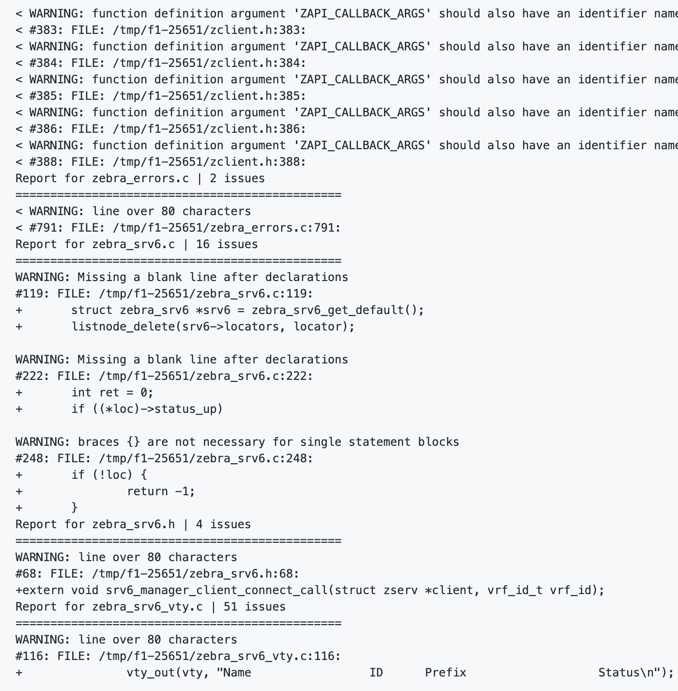

Upstream Guide for Dummies
Check list
- unit test を実行する
- 自分の追加した topotest を実行する
具体例
BGP SRv6 VPNを FRRにcontributionした時に, 手元環境で全ての動作は問題なく 動いているように見えたが, FRRの CI の unit testで失敗が生じた時を例に進めていく.
~/frr/tests/bgpd# ./test_mpath
BGP Multipath Tests Run at Tue Dec 29 08:03:07 2020
Test bgp maximum-paths config: OK
&&
2020/12/29 08:03:07 Assertion `*list' failed in file lib/linklist.c, line 342, function list_delete
2020/12/29 08:03:07 Backtrace:
2020/12/29 08:03:07 _zlog_assert_failed+0x38 7f9566a923d8 7ffe96a0bcb0 /home/ubuntu/frr/lib/.libs/libfrr.so.0 (mapped at 0x7f9566a34000)
2020/12/29 08:03:07 list_delete+0x55 7f9566a915e5 7ffe96a0bcc0 /home/ubuntu/frr/lib/.libs/libfrr.so.0 (mapped at 0x7f9566a34000)
2020/12/29 08:03:07 bgp_free+0x194 55c3d03d52d4 7ffe96a0bce0 /home/ubuntu/frr/tests/bgpd/.libs/test_mpath (mapped at 0x55c3d0319000)
2020/12/29 08:03:07 bgp_delete+0x48d 55c3d03d83fd 7ffe96a0bd60 /home/ubuntu/frr/tests/bgpd/.libs/test_mpath (mapped at 0x55c3d0319000)
2020/12/29 08:03:07 main+0x135 55c3d0355535 7ffe96a0bdb0 /home/ubuntu/frr/tests/bgpd/.libs/test_mpath (mapped at 0x55c3d0319000)
2020/12/29 08:03:07 __libc_start_main+0xe7 7f9565c94bf7 7ffe96a0be10 /lib/x86_64-linux-gnu/libc.so.6 (mapped at 0x7f9565c73000)
2020/12/29 08:03:07 _start+0x2a 55c3d03579fa 7ffe96a0bed0 /home/ubuntu/frr/tests/bgpd/.libs/test_mpath (mapped at 0x55c3d0319000)
2020/12/29 08:03:07 Current thread not known/applicable
log: showing active allocations in memory group libfrr
log: memstats: Buffer : 1 * 24
log: memstats: Hash : 4 * (variably sized)
log: memstats: Hash Bucket : 1 * 32
log: memstats: Hash Index : 2 * (variably sized)
log: memstats: Link List : 8 * 40
log: memstats: Link Node : 4 * 24
log: memstats: Skip List : 2 * 56
log: memstats: Skip Node : 4 * 160
log: memstats: Stream : 2 * 23208
log: memstats: Thread : 1 * 168
log: memstats: Thread master : 4 * (variably sized)
log: memstats: Thread Poll Info : 2 * 8192
log: memstats: Thread stats : 1 * 72
log: memstats: Typed-hash bucket : 1 * (variably sized)
log: memstats: Typed-heap array : 1 * 576
log: memstats: VRF : 1 * 216
log: memstats: Work queue : 1 * 152
log: memstats: Work queue name string : 1 * 16
log: memstats: Zclient : 1 * 3520
log: showing active allocations in memory group logging subsystem
log: showing active allocations in memory group bgpd
log: memstats: BGP instance : 1 * 9512
log: memstats: BGP EVPN MH Information : 1 * 40
log: showing active allocations in memory group rfapi
Aborted (core dumped)
このケースでは, ぱっと見 bgp_delete() で何かおかしいことが起きているなと
考えることができる. よりくわしいことは, core file が出力されるのでそこを
よくみることで確認できる
~/frr/tests# ls -l test_mpath_core-*
-rw------- 1 root root 1118208 Dec 29 07:29 test_mpath_core-sig_6-pid_12766.dmp
-rw------- 1 root root 1118208 Dec 29 08:02 test_mpath_core-sig_6-pid_3608.dmp
-rw------- 1 root root 1118208 Dec 29 08:12 test_mpath_core-sig_6-pid_5336.dmp
~/frr/tests# gdb bgpd/.libs/test_mpath test_mpath_core-sig_6-pid_3608.dmp
...
(gdb) bt
#0 __GI_raise (sig=sig@entry=6) at ../sysdeps/unix/sysv/linux/raise.c:51
#1 0x00007f397b738921 in __GI_abort () at abort.c:79
#2 0x00007f397c5173fd in _zlog_assert_failed (assertion=assertion@entry=0x7f397c57c220 "*list", file=file@entry=0x7f397c57c1e2 "lib/linklist.c", line=line@entry=342, function=function@entry=0x7f397c57c290 <__func__.9217> "list_delete") at lib/log.c:317
#3 0x00007f397c5165e5 in list_delete (list=list@entry=0x55b222c79b58) at lib/linklist.c:342
#4 0x000055b2213ee2d4 in bgp_srv6_cleanup (bgp=0x55b222c77660) at bgpd/bgpd.c:1326
#5 bgp_free (bgp=bgp@entry=0x55b222c77660) at bgpd/bgpd.c:3675
#6 0x000055b2213f13fd in bgp_unlock (bgp=0x55b222c77660) at ./bgpd/bgpd.h:2113
#7 bgp_delete (bgp=0x55b222c77660) at bgpd/bgpd.c:3623
#8 0x000055b22136e535 in cleanup_test (t=0x55b221734c40 <test_bgp_cfg_maximum_paths>) at tests/bgpd/test_mpath.c:435
#9 run_tests (tests=0x55b221734960 <all_tests>, fail_count=<synthetic pointer>, pass_count=<synthetic pointer>, num_tests=<optimized out>) at tests/bgpd/test_mpath.c:470
#10 main () at tests/bgpd/test_mpath.c:489
このように確認すると, bgp_srv6_cleanup 関数のなか. 具体的には bgpd/bgpd.c:1326 が注目すべき
ポイントであることもわかる.
Executing Check PatchS
http://docs.frrouting.org/projects/dev-guide/en/latest/workflow.html#code-formatting
FRRではpatchをreviewする時に事前に機械がpatchをcheckし, formatが正しいかをreportしてくれる. 例えば以下の画像のようなerrorがでる.
正しいケース(おそらく許されるケース)

ダメなケース(おそらく許されないケース) 
checkpatchを手元で実行する方法
もちろんPR branchがpushされると自動で実行されるが, 手元のlocal環境でも実行することができる.
slankdev/frr:hoge という branchを利用している場合
git remote add upstream ...
git fetch upstream
git diff upstream/master /tmp/main.diff
git checkout upstream/master
./tools/checkpatch.sh /tmp/main.diff .